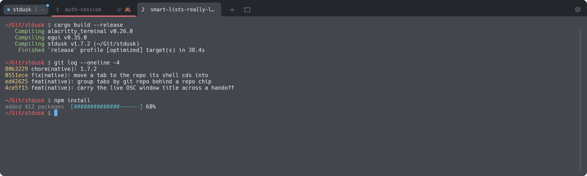
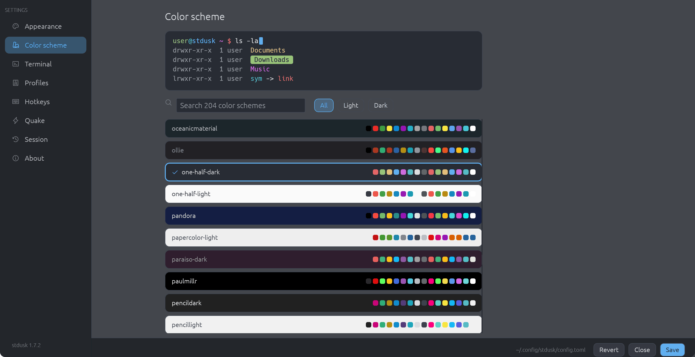

A quake-style terminal with a real GUI tab bar. Native Rust, no Chromium, no apologies. It drops from the top edge on a keystroke, shows you what your machine is actually doing, and gets out of the way.
Free and MIT licensed. macOS first, Apple Silicon and Intel.

Everything a local-shell terminal should be, plus the few things that make stdusk worth summoning.
apt, pip, npm, curl, cargo, your 3am migration. If it prints N% or speaks OSC 9;4, the tab wears a progress bar. Switch away, keep working, glance back.
Got a claude, a codex and a gemini spread across seven tabs? Each tab shows which one it runs, with that tool's own logo. No plugins, no config: stdusk reads the process tree.
Ctrl+VTurn on group by repo and the tab bar shows only the repo you're in, behind a small chip. cd into another repo and the tab moves there with you. Git worktrees fold into their main repo.
When brew upgrade lands a new version, a dot on the gear offers a restart. The old window hands its live shells to the new one over a local socket, with the screen and recent scrollback replayed. Your running build, your SSH session, your agent: still there.
Press Cmd, and browse 204 color schemes with a live preview. Filter light or dark, pick one for each, and let stdusk follow the system. Every scheme gets a contrast floor, so nothing turns unreadable.

The things you only notice when a terminal gets them wrong.
Drops from the top edge on a global hotkey, hides on blur, follows your Space. Or set mode = "window".
Split right or down, drag to resize, zoom a pane, and broadcast typing to every pane at once.
CmdF with regex, case and whole-word toggles. Every match highlighted.
CmdShiftP, fuzzy search. Every action, profile and repo two keys away.
Tabs, splits, folders, names, colors and pins come back after a quit.
URLs, file paths and IPs, even when they wrap over two lines.
Drag files onto a pane and their paths land at the prompt, safely quoted.
Optional fish-style ghost text from your zsh history. Right arrow accepts.
Injected for you. Tabs show when a command fails and new tabs open in the same folder.
Push your config to your own private git repo and pull it anywhere. No accounts.
Launch it again and you get a new tab in the running window, not a second app.
Color, rename, pin, drag to reorder, reopen closed tabs, close others. Choose where new tabs go.
Pick a light and a dark scheme. stdusk switches with macOS and tells your apps.
Select and copy, drag with auto-scroll, SGR mouse reporting for TUIs, middle-click paste.
Truecolor, real bold faces, dim text, wide characters, emoji and ligatures that sit right.
No Dock clutter in quake mode. Show, hide, restart and quit from the menu bar.
macOS-native defaults. Remap any of them in Settings, or in config.toml.
Text-grid terminals (tmux, kitty, ghostty) are fast, but they draw tabs as text. They can never look like a GUI. Electron terminals look gorgeous and charge you a few hundred megabytes of RAM for it. stdusk does both: egui paints real tabs, alacritty_terminal runs the grid, and it all ships as one native binary.
| Text-grid terminals | Electron terminals | stdusk | |
|---|---|---|---|
| Real GUI tab bar | no, text cells | yes | yes |
| Native, no browser engine | yes | no | yes |
| Progress bars on tabs | rare | some | yes |
| AI-CLI badges | no | no | yes |
| Quake drop-down built in | some | some | yes |
Lands in /Applications and puts the stdusk CLI on your PATH.
$ brew install hobo-ware/tap/stduskHit Ctrl` anywhere. It drops from the top edge. Hit it again and it's gone.
[quake] hotkey = "Ctrl+Grave"Press Cmd, or edit the file by hand. Same thing, the GUI just saves it.
~/.config/stdusk/config.toml
A terminal stream at the faded end of the day. The machine speaks back.